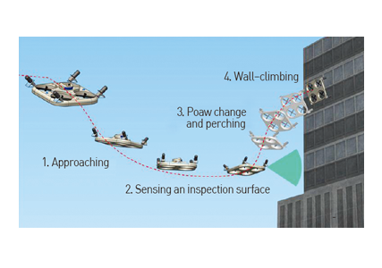
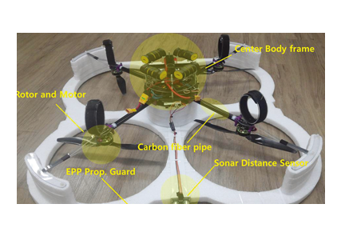
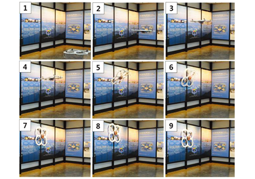
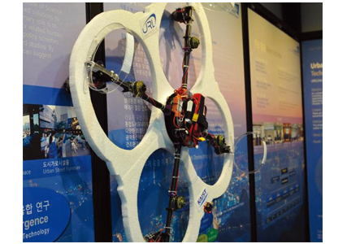

연구성과 10선
연구성과 10선
KAIST RESEARCH ACHIEVEMENTS
벽면 등반형 복합 드론(CAROS) 개발
건설및환경공학과 명 현
요약
기술 및 산업의 발달로 도시화는 전 세계적인 추세가 되며, 이 도시들의 중심부에는 고층 및 초고층 구조물들이 들어선다. 이 구조물들의 유지보수는 이제 벽면을 등반하는 드론(CAROS)에 의해서 수행된다. CAROS는 자유자재로 자세를 변환하여 구조물의 표면에 밀착하여, 구조물의 모든 부위를 검사한다. 이 초고층 구조물은 화재가 발생할 경우 큰 인명피해 및 재산피해로 이어질 가능성이 크지만, CAROS는 저층, 고층에 상관없이 화재 현장에 투입되어 신속하게 정찰 및 진압 임무를 수행한다. 또한 화재로 구조물이 손상되어 통과가 불가능한 곳은 자세를 변환하여 벽면을 등반해 신속하게 빠져나간다. 이 로봇은 화재의 발원지를 신속히 파악하여 화재의 확산을 막는다. 동시에 위험에 처한 인명을 찾아내고, 이 정보를 본부와 무선 통신한다. 그 결과, 소방관들은 보다 빠르게 사람의 위치를 찾아낼 수 있고, 이를 바탕으로 인명 구조율은 획기적으로 상승한다.
연구내용
본 연구에서는 인프라의 설치가 필요없고, 안전성 및 이동성을 최대화한, 소형 드론 형태의 벽체 등반 로봇을 최초로 개발하였다. 해당 로봇은 비행이 가능하므로 기존 로봇들에 비해 이동성이 매우 높으며, 등반 중 예기치 않게 추락이 발생하더라도 비행을 통한 복귀가 가능하다는 장점을 가진다. 또한 구조물에 밀착하여 이동하기 때문에, 대형 시설물의 밀착 정밀 진단 및 유지 보수가 가능하며,사회 안전을 위한 신속 정찰 등의 분야에도 폭넓게 응용이 기대된다.
교량, 고층 건물, 풍력 터빈, 대형 항공기 및 선박과 같은 대형 구조체의 안전성(Structural Health)은 사회의 안전과 직접 연관되어 있으며, 최근 거대 구조물의 노후화 및 붕괴 사고 등으로 인하여 구조물 안전도 검사에 대한 사회적 관심이 높아지고 있다. 하지만, 현재 구조물의 안전도검사는 대부분 인력에 의존하고 있으며, 사람이 직접 해당 지역에 접근하여 검사를 수행하므로 인력수급 및 사고 위험성 등의 문제가 있다. 최근 사람의 접근이 어려운 구조물의 외부를 이동 로봇을 활용하여 검사하려는 연구가 이루어지고 있지만, 기존 로봇들은 대부분 추가 인프라 설치가 필요하거나 진공흡착을 이용하므로, 다양한 형태 및 재료의 외벽에 적용하기 어려워 실용화에 문제가 있었다. 이에 이러한 문제를 해결할 수 있는 로봇 기술의 개발과 지적재산권 확보가 필요하다.
 그림 1. 벽면 등반형 복합 드론 개념도
 그림 2. 벽면 등반형 복합 드론의 프로토타입
 그림 3. 비행 → 벽면 부착 → 벽면 주행 장면
 그림 4. CAROS, 벽면 등반형 복합 드론
본 기술은 대형 구조물의 사람이 접근하기 어려운 부분까지 안전성 검사가 가능하며, 이로 인해 제2의 성수대교, 삼풍백화점과 같은 붕괴로 인한 대형 사고를 사전에 예방할 수 있다. 또한, 본 기술은 화재 사고 현장의 좁은 공간 및 붕괴 잔해물 환경에서의 신속한 이동이 가능한 정찰용로봇으로 활용이 가능하다.
연구비지원
ㆍKAIST 기관고유사업, 융합연구발굴지원사업
연구실적
ㆍ해외 언론 보도 3건 이상. 특히 BBC World News, BBC Click 등의 프로그램을 통해 전 세계에 방영됨(2015년 5월 30일~6월 2일)
ㆍ제어 및 로봇 관련 국제학술대회에서 Best Presentation Award 수상(2015. 10)
ㆍMechanism and system design of MAV(Micro Aerial Vehicle)-type wall-climbing robot for inspection of wind blades and non-flat surfaces," in Proc. of Int'l Conf. on Control, Automation and Systems(ICCAS), pp.1757-1761, Busan, Korea, Oct. 13-16, 2015.
ㆍLG연암재단 해외연구교수 수상(2015. 7) : 비행 및 등반 주행 복합 로봇을 이용한 구조물 안전 진단 기술